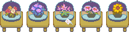

SPRING 2025 NEWSLETTER
It's beautiful day outside!
Birds are singing, flowers are blooming...
Especially. The flowers.

Don't you just love the sweet aroma of roses? Here's a bouquet!
Hello, and welcome once again! It's nice to be here for another newsletter... 2025 is already passing by in the blink of an eye.
The team is under a semi-hiatus still, and it was planned for this break to continue up until the new chapters were released, but, some of us missed the project dearly.... Motivation will always fluctuate as we have busy lives, but we're slowly chipping away at things again and we'd like to show some of the progress we got done today.
The Return of CANDLEHOLDER?!
That's right! CANDLEHOLDER is back from hiatus!
After 2 and a half years with its development halted, we're ready to tackle CANDLEHOLDER again. We've been honing our skills as programmers, writers and sprite artists during this time, and as ASTRAL DISC grew and evolved, so will CANDLEHOLDER.
It'll be going through a semi-major rewrite, have an entire visual update, polish and update the soundtrack, go through MAJOR internal reorganizing (it needs it), and overall shaping itself up to the best it can be! Now that it's fully integrated into ASTRAL DISC, expect major (and more frequent) updates very soon.

HUECYCLES:
the porting process has started a few days ago. seeing our old ass code in there is such a jarring experience... maybe that means we improved :)
You can follow our Gamejolt page or join the Discord for keeping up with the news! We tend to be more active on the Discord, however, keeping more major updates and progress for Gamejolt.
ASTRAL DISC Progress
We've got a LOT of progress down in the general structure of ASTRAL DISC as an engine fork of Kristal.
Firstly, we were able to implement COMPLETION FILES! Not only from Chapters 3-7 and transferring the data between them... but also checking your own DELTARUNE save file with the help of a library!
That way, we'll be able to reuse things like the team name we've given to the main gang, our inventory, our money, our... discarded choices... and more! Please note that this only checks for the Chapter 2 completion file, and even if more chapters are out, our take will remain as Chapter 2 onwards AU.
You might have seen this before, but we have our own take on the Chapter Select! We decided to go for a more personalized approach since some of us didn't like the LTS version of the Chapter Select very much... plus this is a fanmade project, so. Allow us a few creative liberties.
The stars and Shadow Crystal counters are also fully functional.

We have also made more progress on and are polishing up the main maps, Castletown and Hometown. Since they are big maps that require many changes as the chapters progress, we have set them as "common" maps that will be accessible for any chapter, as we control the necesssary variables and modifications from there.
It's pretty fun to see everything come together like this!
Soundtrack Updates & Releases
Did you know that V2 of FRIGHT NIGHT and ELECTRIC PARADE! have been released recently?
In case you haven't, please listen to both of them! Kittblush and Punkipatch did their best to bring these songs to life.
We also made some progress on Minerva's battle theme in the meantime. While it's still far from completion, we'd like to show this small portion of the song:
Beltrowel will also be getting his songs remade and updated.
But I guess he's just too busy at the moment...

Conclusion

Once again, we'd like to thank your continuous support throughout the years.
We'll slowly come out of semi-hiatus more by the time April is here, and whenever Toby releases the chapters.
That will be sure to give us all a much needed boost!
Now where did that bouquet go...?